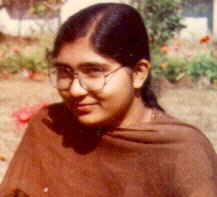

RAstA
by
Arati Nanda


Se dhudha bAlA ta
keun marahattiA
sAikel ra pedel mAri mAri
pAhAnti andhAra re
To swapnila nida tiku
chei'n jagAilA.
PravAta ra nirabatA re
Skul chhAtra chhAtrI nka
pAda sparsa re, tO kada
leutA chhAi nida ti
chup kari, betAla sAji
BikramA ditya nka
prustha shunya helA.
TApare, chAlila rItimat atyAchAra
aphis bAlA ra apahancha byastatA,
Adhunika jAna ra
bhe'in, bhA'in, pe'in, pA'in ( Sound of vehicles)
radi re to bikalAnga sarira tA
DAktara nka operation thieter re padirahithilA.
TathApi tu kahiluni pade
muhan kholi, semAne tO
jIbana tAku dharsana kale boli,
prati ti prabhAta re tO prema ra pratIkhyA- !
sikhibAku chestA karuthili
jIbana sArA rAstA tie hoijAnti bhalA.
-Arati Nanda, Austria
Mo Heera Kete Sundara
by
Arati Nanda
Paahaanti sukra taaraa
Nirmala snigdha mo Heera
Sakaala ra shishu Surjya
Mo dukha paasora. (1)
Dara phutaa golaapa kadhi ru
aspasta Maa daaka
Nei jaae mo aatmaa mana ru
rakhi die bheka. (2)
Phutantaa padma mruga shishu aakhi
dhala dhala chanchala
Baandhi dhare mote dekhi
Chhaade naahin mo anchala.(3)
Godhuli ra raktima kirana
Chanchala batschhya daaka hammaa
Rushi jiba na kale purana
Taa aakhi re kotie chumaa. (4)
Saja phutaa Malli ra baasnaa re
mahaku thaae mo pabitra dhana
chhuti jaae tikhna begare
Pabitra Gangaa taara mana. (5)
-Arati Nanda, Austria
Atikraant Chalaapatha
by
Arati Nanda
Samasta nkra hrudaya ku sparsha kari jAe,
Puni kebe anargala sphurita bakrutA
Upasthita shrotA nkara shruti katu hue. (1)
Mo Akhi ra mAna bharA nata abhimAna
ShilA dehe param bramha darshana kare,
Kebe kebe ganda siktka ashrula nayana
Shunya bhikhyA thAla dhari jhuri jhuri mare. (2)
Dhire dhire purna abhyAsa ra sama tAle
NadI hoi parbata ra pArshwa chiri jAe,
Atyadhika abhyAsa re hoi nishA khor
Samaya ra sAthe sAthe nimna gAmI hue. (3)
Eka gAndhI sAji, ahinsA ra khadga dhari
Bijaya ullAse mun matuAlA hue,
Puni kebe krodha bashe, Atma gyAna dhwonse
MamatA ra bandhana ku dhwonsa kari die. (4)
SImAnta ra dui bindu janma Au mrutyu
Charana chumuchhi, bAunsha rAnI ra rajju,
BhAra sAmya rakhyA kari langhi jibi meru
AtikrAnta chalA patha pArijAta sAju. (5)
-Arati Nanda, Austria
Byabadhaana
by
Arati Nanda
Bhetuchhi, niti prati dina
Aneka chinhaan achinhaan muhan
Hasa khusi ra samishrana.
Aatmika sukha re ki'e baa hasuchhi
Dainya ra bhaara re ki'e baa kaanduchhi
Mo mana darpana ra pratibimba
Khyana ke milei jaauchhi.
Padma pari gotie muhan
Hasu thaa'e e'te muhan re
Prati ti khyane unki uthe
Mo bhaabana baadal re.
Khoji baaku chestaa kare
E aakhi ti mishuchhi ki
Mo Heera ra aakhi re?
E paati ti kahuchhi ki
Mo Munu ra bhaasha re?
Sate abaa tote paa'e
Maricheekaa bhrama re
Kintu para muhoorte
Sachetana mana kahe
Mo Heera mo thaaru achhi
Sahasra maaila doorare.
-Arati Nanda, Austria
Europa Jatra
by
Arati Nanda
I fully realize that any oriyan who reads the poem will find that some of his favourite words are misspelt. But this seems unavoidable. The ultimate aim is to offer the fragrance of oriya rhythm before it could really be produced in its original script. Here, there are few German words which are reproduced exactly without giving the actual pronunciation. Therefore, your commands on my offhand errors are highly appreciated. In the end, I record a very personal word of thanks to my friend Dr. Swati Mohanty (Germany) for her fruitful correspondence on its highest possible oriya accent.
Mo jeebana ra itihaasa prushthaa re
jebe smruti pushpa prashphutita hue,
ateeta chitrapata, mana aakaasha re
mallee, juee aadi indradhanu saaje.(1)
Prakruti ra raanee mora maatrubhoomi
bhaashaa re jaahaara muktaa
bharidei thilaa hrudaya ku mora
pabitra prema ushnataa.(2)
Pashchimaa sooruja melaani deuchhi
hrudaya spandana uthuchhi paduchhi
pitaa maataa bhaatru bhagnee ra mamataa
shesha darshana ra saakshee 'KALIKATAA'.(3)
Shuklapaksha ashtamee tithi re jebe
durgaamedha maayaa jaala srushti kare
jyotsnaa-snaataa byomajaana mora, ebe
europa abhimukhe jaatraa kare. (4)
Jaa-a-naa jaa-a-naa he bidyut gaamee
pherichaala mora deshe
priyajana priya kathaara maadhoorjya
piibaaku de nimishe. (5)
Pakshee pari aakaasha re udibaara
kete baalya chapalataa
aakaasha chhuan jhulana, lamphadian
kete je pratijogeetaa.(6)
Ichhchhaa 'bare' balee aadhunika jana
mora anurodha kahinki sunantaa
'VIENNAA' re thiaa mora gotaapana
mana chume 'ODISHAA' ra komalataa.(7)
Ajanaa raaije ajanaa mulake
sabu je ajanaa mote
bhirnna taanka kathaa bhirnna beshabhushaa
sabu nuaa dishe mote. (8)
Jarmaana bhaashaa re odishaa ra khaadya
khoji baaku hue banaa
aakhi dekhe jaahaa paae sinaa taahaa
baaki paain baata banaa.(9)
Suji bole 'Griess' masalaa 'Gewuerz'
choodaa, 'Reis Flocken'
ataa hoilaani 'Mehl' jebeta
dali hue 'Linsen'.(10)
Tushaara paataku Ojana jinisha
naahin paakhe riksaa tie
garama poshaaka Ojana saangaku
bege chaalibaku hue.(11)
Kebe abaa jadi Soorjya dekhaadie
mana praana naachi uthe
parbata sandhi ru asta gaamee Soorjya
'BOLANI' ku bhetee die.(12)
Aadhunika deshe sabu chaka chaka
raasta ghaata sapha sutara
gobara lipaa ra to daanda duaara
shaanti ra prateeka mora.(13)
Kartabya aahwaane 'YUROPA' bhramana
nuaa sinaa abhigyantaa
aa-he 'JAGANNATHA' tumari saamraajye
mile sampurnna poornnataa.(14)
-Arati Nanda, Austria
Pakhaala, Mo Atithinka Paain
by
Arati Nanda
(Dedicated to Grandma : Smt. Rukmani Nanda)
Dear Friends,
It's my pleasure to invite you all for a traditional
food in this summer. Hope, you all enjoy this elegant feast
in our common oriya dining hall.
Atithi Geeshama mo bhagna kutire
Abhyarthanaa mora ghena
Charana maarjana karuchhi tumara
Bhumishtha pranaama ghena (1)
Kokila ra kuhutaana
Basanta ra madhu bana
Baartaa baha saji tuma
Sanketilaa aagamana (2)
Jatane sajaai sneha sinchi sinchi
Pakhaala mu parashuchhi
Kaatha chuli jaale maati haandi pete
Juee kadha phuti achhi (3)
Mamataa ra sparse heeraa khanda bhaate
Chaakhande upare jala
Tahin tike 'juaa' karichhi prastuta
'Baasi' swaadistha pakhaala (4)
Lovaneeya ranga kamaneeya anga
Sorisha re aaloo bhajaa
Raashi badi bhajaa daanta paain khojaa
Die khas khas majjaa (5)
Baadi Leutiaa shaaga ra kharadaa
Podaa baaigana bhartaa
Rasuna chhunkaa ra Aghraana re bharti
Na sphure mana ra baartaa (6)
Tatakaa maachha ra bhajaa baa besare
Bhaata gundaa dwigunita
Basaa dahi puni maati ra palame
'Saja' pakhaala paain ta (7)
Manda mahuliaa torani ra baasnaa
Khyudaa ku bardhita kare
Sajaa, kanchaa lankaa lambila piaaja
Eka saathe thaaliaa re (8)
Teerjaka kirana gaadhuaa bela ra
bhaata belaa hue badhaa
Tuna tarakaree ardha gola kari
Sajaai deichhi pidhaa (9)
Luna paani thuaa aachaara ra saathe
Baama haati aasana ra
Kharaa pithi kari basantu atithi
Bhunjantu mo naibedya ra (10)
-Arati Nanda, Austria

| This Page Has Been Accessed | Times Since |
|---|
was last updated on :